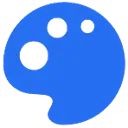
Illusion DiffusionГенерация изображений
В инструменте «Illusion Diffusion» можно получать изображения из словесного задания. Ещё одно направление работы: подготавливать изображения человека или персонажа.
Нейросети: Проверьте один рабочий запрос с вашими материалами. Сравните точность, контекст и возможность проверить результат.
Начните с одного конкретного результата: текста, изображения или разбора документа. Навигация Молекулы помогает найти нужный раздел; условия доступности функции проверьте в своём кабинете.
Мне нужен понятный ответ клиенту по условиям доставки из предоставленного документа. Помоги сформулировать задание модели и перечень проверок ответа. Недостающие условия оставь открытыми.
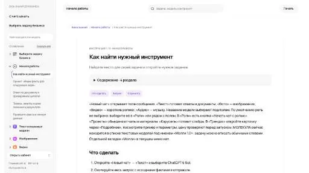

В инструменте «Illusion Diffusion» можно получать изображения из словесного задания. Ещё одно направление работы: подготавливать изображения человека или персонажа.
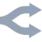
OpenRouter объединяет доступ к моделям через API и позволяет управлять выбором провайдера. Помогает подключать ИИ к приложению и контролировать условия маршрутизации запросов.

Qwen Chat позволяет обсуждать задачи и готовить тексты с моделями Qwen. Веб-чат, отдельное API и локальный запуск имеют разные условия и возможности доступа.

Roboflow предоставляет средства для разработки решений компьютерного зрения и машинного обучения. Основой обучения служит работа с изображениями-примерами, на которых обучается модель. Платформа предназначена для подготовки подобных задач и обучения по визуальным данным; заявленные сроки и достаточный объём выборки нельзя считать универсальными для любого проекта.
Simplai рассчитан на задачи, где нужно собирать видеосцену по описанию или визуальному исходнику. Ещё одно направление работы: менять фотографии с учётом выбранного оформления.

Talkpal предлагает языковую практику через общение с ИИ-репетитором. Пользователь с начальными знаниями может вести переписку и получать сообщения с голосовым воспроизведением. Поддержка разных языков делает инструмент вариантом разговорного упражнения, где письменное общение сочетается с прослушиванием реплик вместо отдельного набора статичных заданий.
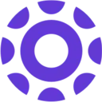
Toolify рассчитан на задачи, где нужно исследовать тему и разбирать найденную информацию. Ещё одно направление работы: использовать разные модели через общее рабочее пространство.
VisualGPT рассчитан на задачи, где нужно собирать видеосцену по описанию или визуальному исходнику. Ещё одно направление работы: менять фотографии с учётом выбранного оформления.

Wondershare AILab используют, чтобы собирать видеосцену по описанию или визуальному исходнику. Ещё одно направление работы: менять фотографии с учётом выбранного оформления.
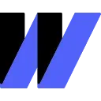
Wordvice AI предоставляет средства корректуры и переформулирования текста, а также его краткого изложения и перевода. Редактор работает с академическими материалами в ходе написания. Пользователь может рассматривать языковые изменения вместе с содержанием своего документа, выбирая нужную операцию обработки письменного материала.
AdpexAI используют для задачи: собирать видеосцену по описанию или визуальному исходнику. Ещё одно направление работы: получать изображения из словесного задания.

Botpress помогает настроить разговорного агента для поддержки. Ответы зависят от базы знаний, а сценарий действий определяет, что бот делает помимо сообщения в чате.
Clearbrief рассчитан на задачи, где нужно разбирать содержимое документов. Ещё одно направление работы: разбирать текст договора и связанные документы.
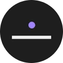
DreamStudio используют для задачи: получать изображения из словесного задания. Ещё одно направление работы: готовить материалы о товарах и услугах.
EleutherAI используют для задачи: подключать ИИ-инструменты к своему окружению. Ещё одно направление работы: разбирать запросы в диалоге с моделью.
В инструменте «Koke AI» можно готовить учебный материал и объяснения. Ещё одно направление работы: исследовать тему и разбирать найденную информацию.
MagicSchool используют, чтобы готовить текст по теме и требованиям к содержанию. Ещё одно направление работы: готовить учебный материал и объяснения.
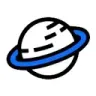
Robotext используют, чтобы готовить текст по теме и требованиям к содержанию. Ещё одно направление работы: редактировать уже написанный материал.

Windsurf использует Cascade для обсуждения кода и изменения проекта. Режимы Chat и Code позволяют разделить исследование ошибки и подготовку правок, сохраняя контроль над командами и файлами.
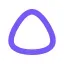
Алиса AI помогает искать объяснения, готовить тексты и изображения, разбирать материалы в чате Яндекса. Формат задания стоит выбирать под конкретный результат, а важные сведения проверять по источнику.
CPAAutomation рассчитан на задачи, где нужно обрабатывать финансовые документы и записи. Ещё одно направление работы: разбирать текст договора и связанные документы.

EmojiHi рассчитан на задачи, где нужно получать изображения из словесного задания.
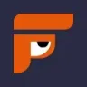
FindPrompt рассчитан на задачи, где нужно получать изображения из словесного задания. Ещё одно направление работы: собирать видео с цифровым ведущим.
Google AI Studio позволяет настраивать запросы к моделям Gemini и готовить переход к API. Рабочая среда подходит для проверки инструкций, форматов ответа и обработки материалов.

Handwrittner оформляет печатный материал под рукописный текст. При подготовке страницы важны размещение строк, различимость символов и соответствие задаче оформления.

Khanmigo рассчитан на задачи, где нужно готовить текст по теме и требованиям к содержанию. Ещё одно направление работы: готовить учебный материал и объяснения.
Kimi относится к инструментам, которые помогают собирать слайды из материала по теме. Ещё одно направление работы: сокращать материал до основных положений.

Leap AI предоставляет средства добавления ИИ-функций в приложение через API и SDK. Доступны предварительно подготовленные модели для генерации и настройки изображений. Поиск по текстовым документам и документация дополняют набор средств, которые разработчик рассматривает при подготовке своего сценария использования.
LM Studio даёт графический интерфейс для загрузки и запуска локальных моделей, работы с документами и настройки сервера. Подходит для сравнения моделей в управляемом окружении.
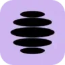
В инструменте «Lucent» можно готовить материалы о товарах и услугах. Ещё одно направление работы: получать изображения из словесного задания.
Netus AI используют, чтобы редактировать уже написанный материал. Ещё одно направление работы: готовить текст по теме и требованиям к содержанию.
В инструменте «Nyckel» можно исследовать тему и разбирать найденную информацию. Ещё одно направление работы: готовить текст по теме и требованиям к содержанию.

Replit представляет собой браузерную среду для разработки программ с ИИ-инструментами. Участники могут совместно редактировать код, использовать готовые шаблоны и материалы для обучения. Кроме работы над проектом, среда предусматривает его развёртывание и размещение, объединяя написание программы с подготовкой к запуску.
Scite показывает контекст научного цитирования и различает поддерживающие, противопоставляющие и упоминающие ссылки. Помогает проверять основания тезиса и готовить ответы по исследовательским источникам.
Veruna AI используют, чтобы получать изображения из словесного задания. Ещё одно направление работы: выполнять задачи с веб-страницами.
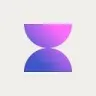
Voilà AI относится к инструментам, которые помогают подготавливать письма и сценарии переписки. Ещё одно направление работы: выполнять задачи с веб-страницами.
YesChat.ai используют, чтобы готовить музыкальную композицию по заданию. Ещё одно направление работы: собирать видеосцену по описанию или визуальному исходнику.

Aitubo создаёт изображения из эскизов с помощью ИИ, включая игровые материалы и фотографии. В продукте также представлены мультяшные визуальные варианты. Редактор позволяет изменять созданные изображения и уточнять художественные ресурсы, связывая генерацию и дальнейшую обработку в одном процессе.

ArtGeneration.me используют для задачи: получать изображения из словесного задания. Ещё одно направление работы: собирать видео с цифровым ведущим.

Azure AI Vision предоставляет компоненты компьютерного зрения для приложений. Основная работа состоит в передаче изображения и обработке полученных признаков или распознанных сведений.

Cohere относится к инструментам, которые помогают переводить записанную речь в текст. Ещё одно направление работы: исследовать тему и разбирать найденную информацию.

DeepFiction используют для задачи: собирать видеосцену по описанию или визуальному исходнику. Ещё одно направление работы: получать изображения из словесного задания.

В инструменте «GenTube» можно получать изображения из словесного задания. Ещё одно направление работы: готовить видеоматериалы для публикации.

Google NotebookLM помогает задавать вопросы к загруженным материалам и готовить конспекты с опорой на источники. Связь ответа с документом позволяет проверить вывод по исходному фрагменту.
iWeaver рассчитан на задачи, где нужно сокращать материал до основных положений. Ещё одно направление работы: собирать видео с цифровым ведущим.
В инструменте «Maekersuite» можно готовить материалы о товарах и услугах. Ещё одно направление работы: готовить текст по теме и требованиям к содержанию.

Manus предлагает агентное выполнение задач с несколькими этапами. Пользователь задаёт желаемый результат, а промежуточные действия нужно проверять по мере работы.

Mem рассчитан на задачи, где нужно сокращать материал до основных положений. Ещё одно направление работы: организовывать материалы и поиск по ним.
Страница 2 из 4